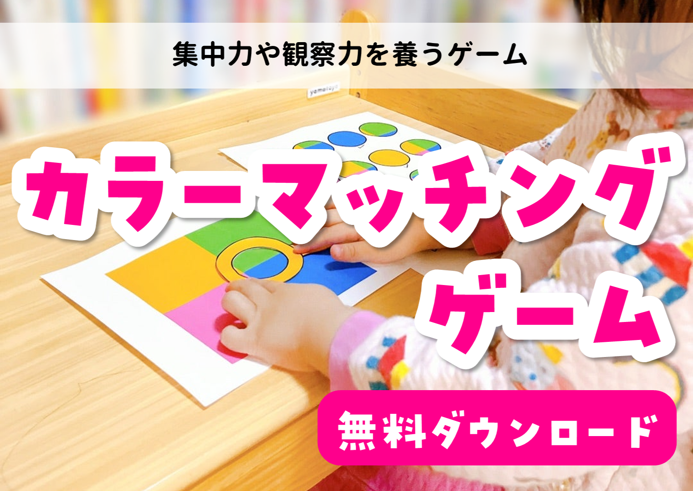
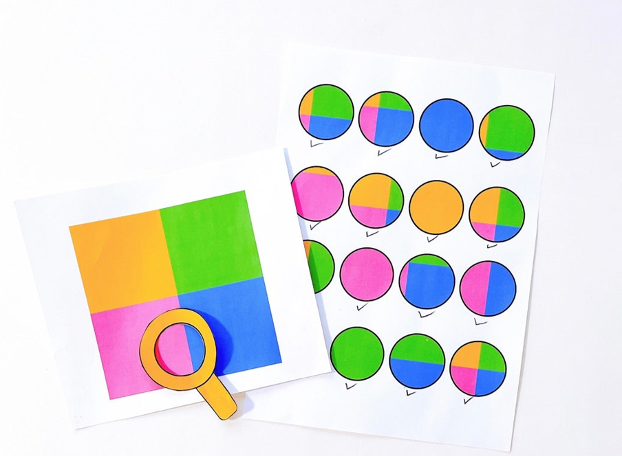
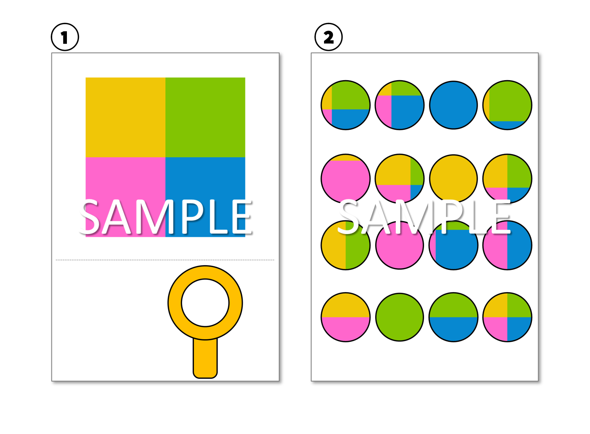
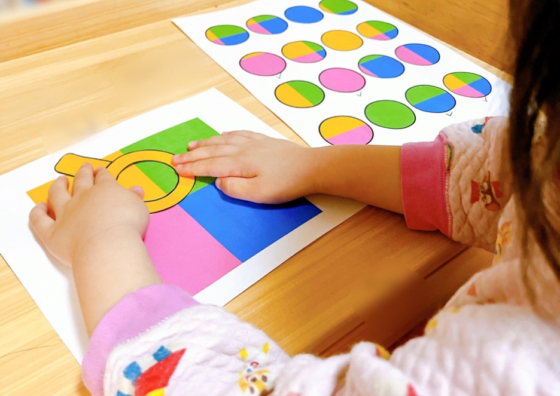
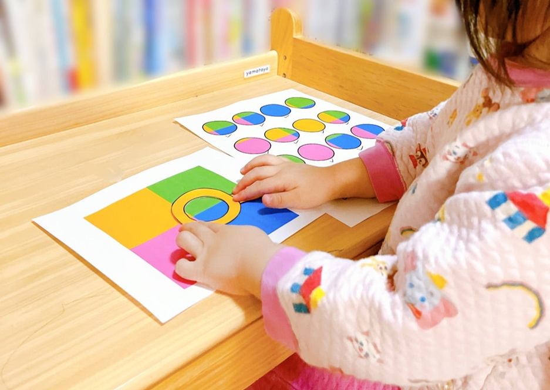

カラーマッチングゲーム
カラーマッチングゲームを
作ってみました！
4色の色のついた台紙の中から
お題シートの色の配色になるところを
虫眼鏡で探すゲームです💡
色の認知能力を鍛え、
集中力や観察力を
身に付けることができる楽しいゲームです✨


このゲーム、すごく盛り上がりました！
目次
データシェアと遊び方
3歳むすめの反応は？
ゲームで身に着く力
データシェアと遊び方
データは2枚あります💡

ダウンロードする
①は台紙と虫眼鏡
②はお題シートです。
*注意*
利用事項をよく確認の上ご使用ください。
〇ご家庭での個人利用
×素材の加工・販売・商用利用不可
×素材の無断転載
次に遊び方を説明するね👍
始めの準備として、シートから虫眼鏡を切り離し
セッティングしておいてください。
①お題を確認する
はじめにお題の配色を見て、再現するものを確認します。
②シートの中から虫眼鏡で該当箇所を探す
虫眼鏡の位置を試行錯誤させながら、お題の配色になる箇所を探します。
③答えの確認
虫眼鏡の中の配色が、お題の配色と一致するかを確認します。
3歳のむすめとすごく盛り上がりました✨
3歳むすめの反応は？

1色の配色を見つけるのはとても簡単で
「ラッキー問題だね」
といっていました👍
ただ3色の配色が難しかったようで
「見つからないな～」
「ちょっとピンクが見えちゃうな～」
等と苦戦している様子が見られました。
問題は16問用意したのですが
集中して10分くらいで解いてしまったので
とても驚きました😊
3歳だと少し簡単な印象はありました💡
ゲームで身に着く力

カラーマッチングゲームで身に着く力を
紹介していきます。
・色の認知能力を鍛えます。
・子どもの集中力と観察能力を向上させます。
・手と目の調整を訓練します。
親子の楽しい知育の時間になったら嬉しいです✨